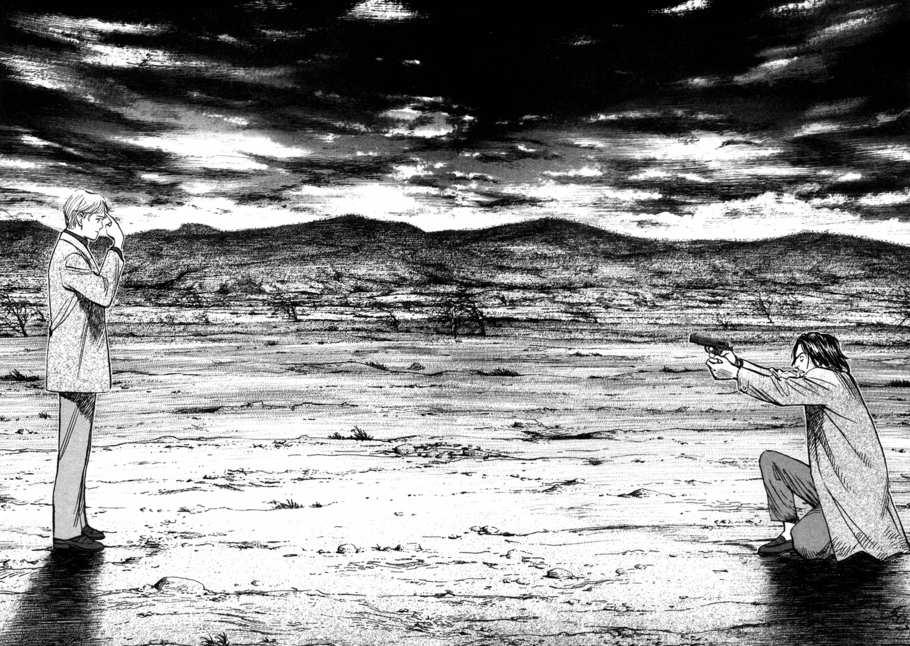
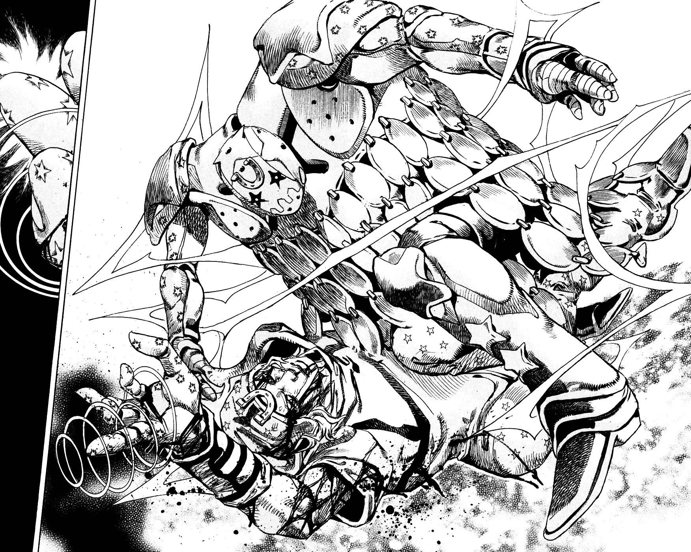
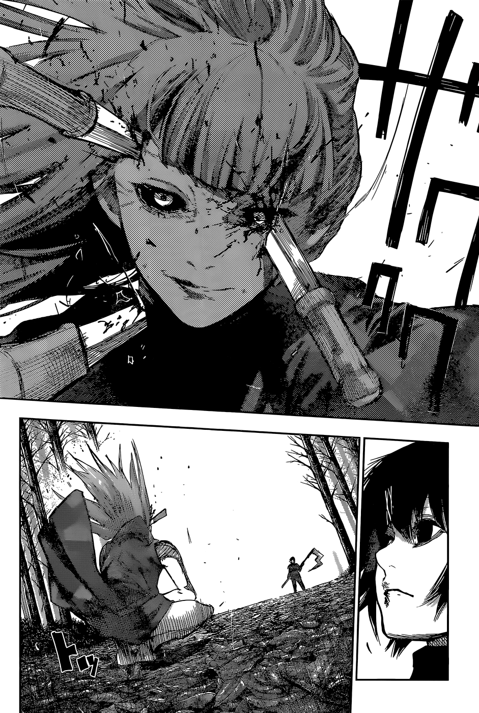

Термин «сэйнэн» (青年) буквально означает «молодой мужчина». Однако жанр оформился не сразу, а в результате эволюции манги вслед за своей аудиторией.
Этапы развития жанра
Послевоенная Япония. Пионеры вроде Осаму Тэдзуки создавали мангу для всех, но растущее поколение первых читателей сёнен-манги (подростков) повзрослело. Возник спрос на более сложные истории. Ранние прото-сэйнен публиковались в журналах вроде Weekly Manga Times и часто были сосредоточены на взрослой жизни, бизнесе, политике и, конечно, эротике (жанр «сэйдзи»).
Это ключевая эра. Появились специализированные журналы: «Big Comic» (1968), «Weekly Manga Goraku» (1968), «Morning» (1982). Они предлагали истории, радикально отличавшиеся от сёнена:
Антигерои и реализм: Вместо непобедимых идеалистов — уставшие самураи («Козерог» Бобруйги), циничные детективы, неудачливые бизнесмены.
Драма и социум: Темы карьеры, брака, социального давления, исторических драм («Голубой период» — хотя он и поздний, но продолжает эту линию).
Влияние европейской графики: Мангаки начали экспериментировать с более реалистичной анатомией, сложной штриховкой и кинематографичными ракурсами, отходя от канонического «аниме-стиля».
Жанр взрывается разнообразием. Философские триллеры («Монстр»), сюрреалистичные драмы («Токийский Гуль»), исторические эпопеи («Берсерк»), сложнейшая научная фантастика («BLAME!») — всё это сэйнэн. Ключевое: глубина проработки тем и персонажей. Цель — не развлечь, а заставить задуматься, погрузить в сложный мир.
Хрестоматийные вершины жанра
Теперь обратимся к вашим примерам — это хрестоматийные вершины жанра.
1. «Монстр» (Наоки Урасавы)
Краткий сюжет: Гениальный нейрохирург Кэндзо Тэмма в 1986 году в Западной Германии спасает жизнь мальчика вместо бургомистра, поступив по совести. Спустя девять лет его карьера разрушена, а спасённый мальчик, Йохан Либерт, оказывается хладнокровным «монстром» — манипулятором, вдохновляющим на серийные убийства. Считая себя ответственным за создание этого зла, Тэмма бросает всё и пускается в отчаянную охоту через Германию и Чехию, чтобы найти Йохана и остановить его, параллельно раскрывая мрачную тайну экспериментов времен ГДР.
Это глубокий детектив-триллер о природе зла. Центральные вопросы: Что делает человека монстром? Существует ли «чистое» зло? Ценность каждой человеческой жизни (лейтмотив фразы главного героя, нейрохирурга Кэндзо Тэммы). Манга исследует травму, манипуляцию, этику выбора и задается вопросом, можно ли остановить зло, не становясь монстром самому. Это притча о моральной ответственности в почти документальной, реалистичной подаче.
Стиль Урасавы — эталон гиперреализма и кинематографичности в манге.
Персонажи выглядят как живые люди (европейцы — как европейцы), города прорисованы с топографической точностью (Германия, Чехия). Урасава виртуозно использует ракурсы, крупные планы на глаза, длинные планы для создания напряжения. Его страницы дышат, как кадры отличного европейского триллера. Мрачная, давящая атмосфера 90-х в Европе передается через плотную, детализированную штриховку и мастерскую работу со светом и тенью.

2. «Steel Ball Run» (7-я часть JoJo)
Краткий сюжет: Америка, 1890 год. В рамках масштабной гонки на лошадях «Steel Ball Run» от побережья до побережья сходятся две ключевые фигуры: Джонни Джостар, парализованный циничный экс-жокей, и Джайро Зеппели, итальянский наездник, владеющий таинственной техникой вращающейся стали. Гонка оказывается поиском священных останков Иисуса Христа, разбросанных по маршруту. Джонни участвует, чтобы найти средство от паралича, но вскоре сталкивается с заговором правительства США во главе с президентом Фанни Валентайном, стремящимся собрать останки для «блага нации».
Это, возможно, самая философски насыщенная часть JoJo. Араки уходит от глобального зла к личным драмам. Основные темы: Джонни Джостара, парализованный ковбой, ищет не просто победы в гонке, а способ снова ходить и искупить прошлые ошибки. Гонка через всю Америку — метафора погони за целью, где каждый участник жертвует чем-то ради неё. Главный антагонист, Фанни Валентайн, воплощает идею патриотического фатализма («мой поступок праведен, если он для блага моей страны»). Ему противостоит личная воля Джонни к росту и преодолению судьбы.
К этому времени стиль Араки достиг невертонной утонченности. Персонажи выглядят как с подиумов, их позы грациозны и динамичны. Араки изучал скульптуру и моду, что видно в каждой линии. Пустыни, каньоны, города — всё нарисовано с фотографической точностью, что создает мощный контраст с абсурдностью «Стендов» (способностей). Гонка на лошадях передана с безумной энергией. Каждая глава похожа на роскошный, брутальный и стильный western.

3. «Токийский Гуль» (Суи Исиды)
Краткий сюжет: Студент Кэн Канеки после неудачного свидания оказывается жертвой нападения гуля — существа, питающегося человеческой плотью. Чтобы спасти его, врачи пересаживают ему органы гуля, превращая в получеловека-полугуля. Теперь, принадлежа к обоим мирам и не принимаемый ни одним, Канеки вынужден скрываться, учиться жить с ужасным голодом и выживать в жестокой войне между гулями и следователями - государственные служащие натренированные на убийтво гулей, которая кипит в подполье Токио.
Это трагическая притча о двойственной природе, идентичности и границах между «своими» и «чужими». Кто монстр? Гули, которые должны есть людей, чтобы выжить, и люди, истребляющие их с жестокостью. Где грань между жертвой и палачом? Путь Кэна Канеки — это мучительная борьба с собственной новой, ужасной природой. Можно ли остаться человеком, перестав быть им биологически? Манга блестяще показывает изоляцию того, кто не принадлежит ни одному миру.
Стиль Исиды эволюционирует от достаточно стандартного к уникальному и символичному. В кульминационные моменты рисунок становится хаотичным, угловатым, полным сюрреалистичных образов (орхидеи, бабочки, центрифуги), отражающих психическое состояние героев. Каждая деталь (маска, какуган, цепи кагуне) несет смысл. Бои — это не просто драки, а психодрамы, выплеснутые на страницу. Исида — мастер символичных, графичных и меланхоличных обложек, которые сами по себе являются произведениями искусства.

Этот анализ демонстрирует, как сэйнэн эволюционировал от простых взрослых тем к сложным философским исследованиям человеческой природы, используя визуальный язык, который постоянно развивается и адаптируется к потребностям повествования.